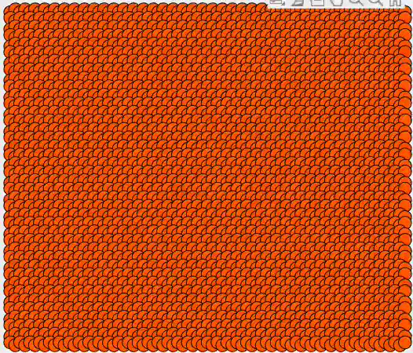
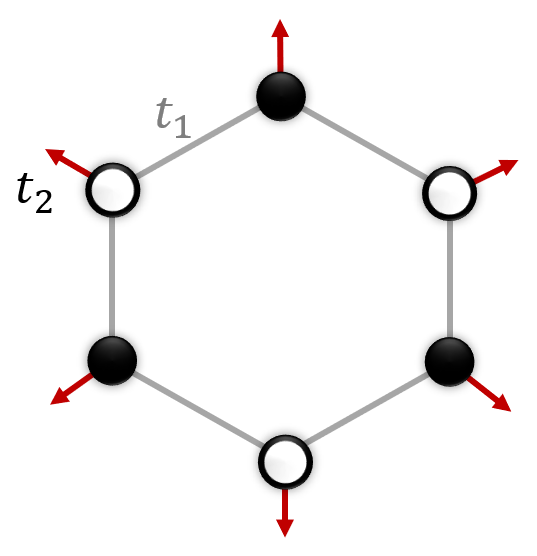
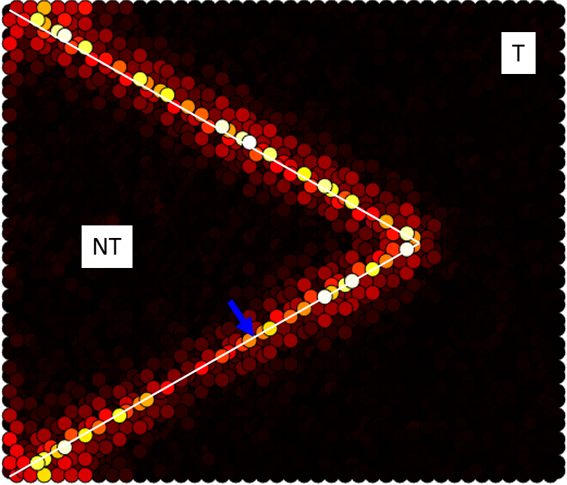
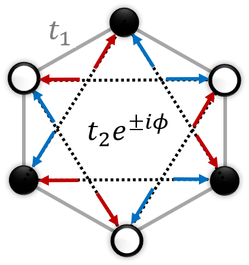
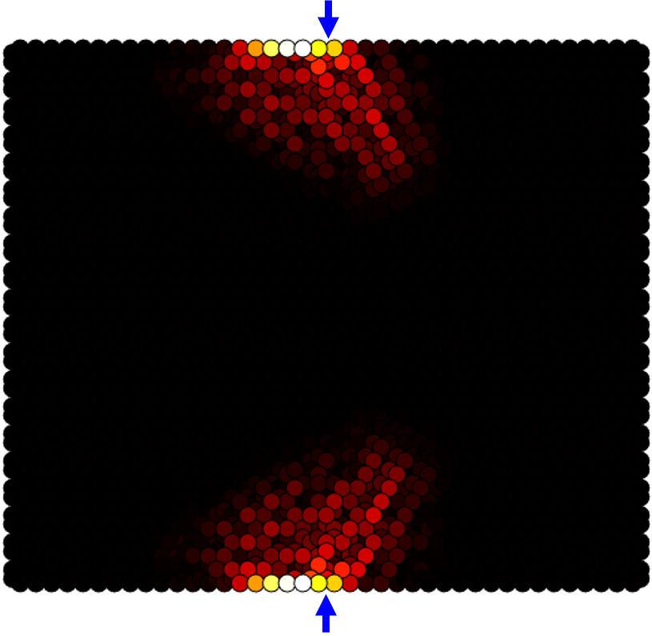
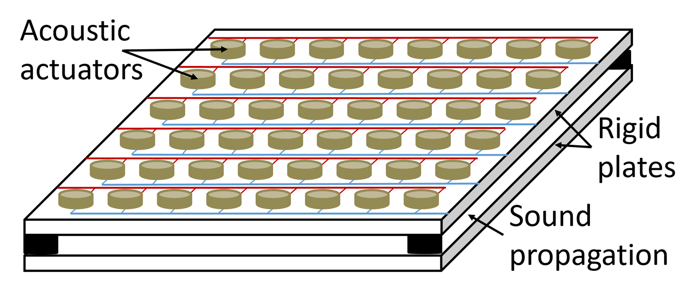

Autonomous topological waveguiding inspired by quantum mechanics
Feedback-based topological mechanical metamaterials
Haldane
Non-Newtonian metamaterials emulating the quantum Hall effect
We introduced a method to design topological mechanical metamaterials that are not constrained by Newtonian dynamics. The unit cells in a mechanical lattice are subjected to active feedback forces that are processed through autonomous controllers, pre-programmed to generate the desired local response in real-time. As an example, we focused on the quantum Haldane model, a two-band topological system supporting the anomalous quantum Hall effect. This model breaks time-reversal symmetry via nonreciprocal coupling terms, the implementation of which in mechanical systems required violating Newton’s third law. We demonstrated that the required topological phase, characterized by chiral edge modes, can be achieved in an analogous mechanical system only with closed-loop control. We demonstrated that the resulting system has all the properties of the quantum model, supporting unidirectional, topologically-protected wave propagation along the metamaterial edges.



Mimicking other quantum topological phenomena on the same platform
Pseudo-spin multipole topological insulator
We derived a closed-loop control strategy to turn the same mass-spring lattice into a topological insulator, emulating the QSHE with no spinning elements. The underlying pseudospin-orbit coupling was obtained by breaking spatial symmetry in real-time. The feedback forces created effective unit cells with different inter and intra site couplings.


The modified Haldane model
We derived a control program to realize a non-Newtonian mechanical topological system with anti-chiral edge sates, on top of the same mass-spring lattice. The complex-valued couplings were polarized in a way that modes on opposite lattice edges propagate in the same direction, balanced by counter-propagating bulk modes.


Two-dimensional feedback-based topological acoustic waveguides
Steering
We realized active autonomous guiding of topological sound beams along arbitrary curved paths in free two-dimensional space. Acoustic transducers, embedded in a slab waveguide, generated desired dispersion profiles in closed-loop by processing real-time pressure field measurements through pre-programmed controllers. We mimicked the quantum valley Hall effect by actively creating an alternating acoustic impedance pattern across the waveguide. The pattern was traversed by artificial reconfigurable trajectories of different shapes. By topological protection, sound waves between the plates remained localized on the trajectories.



Related publications
Real-time steering of curved sound beams in a feedback-based topological acoustic metamaterial
L. Sirota, D. Sabsovich, Y. Lahini, R. Ilan, and Y. Shokef.
Mechanical Systems and Signal Processing, vol. 153, p.107479, 2021.
Non-Newtonian topological mechanical metamaterials using feedback control
L. Sirota, R. Ilan, Y. Shokef, and Y. Lahini.
Physical Review Letters, vol. 125,p. 256802, 2020.
Feedback-based topological mechanical metamaterials
L. Sirota, Y. Lahini, R. Ilan, and Y. Shokef.
14th International Congress on Artificial Materials for Novel Wave Phenomena - Metamaterials 2020, New York, USA.